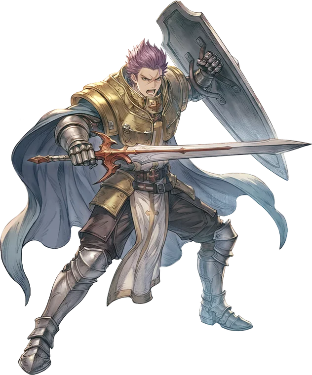

Second tier
Crusader
Crusader is the alternative advancement option for the Swordsman class, marrying the inherent defense and damage mitigation strategies of the Swordsman with the holy magic of the Acolyte.
While there are two general build options, they are not as strictly divided as the Knight's are. Spear builds branch out of Swordsman's Slash, compounding the Bleed status with an additional Blind status from Brilliant Strike. Holy Cross takes advantage of both, inflicting devastating damage if the enemy is Bleeding and Blinded at the same time. Spear Flurry creates an exceptional damage window for burst, instantly refreshing the Cooldowns of all of the Crusader's Spear skills.
The Shield Build sacrifices this exceptional burst potential for a balanced approach to damage and survivability. Faith, the stand-in for Shield Mastery, increases the user's physical and magical defenses. Shield Slam is the core damage skill, supplemented by Shield Boomerang to strike at enemies before they enter melee range. Both skills receive a large damage bonus from the target being Vulnerable, while Boomerang also helps to reapply the status.
The class's two "ultimate" skills mirror each other in function. Restoration is a ground based spell that heals the user and their allies over time. Grand Cross takes the opposite approach, sacrificing the Crusader's HP to deal massive damage in an area around them, while also applying the Blind and Vulnerable statuses in case any follow-up is necessary. Neither skill requires any investment in Int or Magic Attack for optimal performance, allowing the Crusader to focus on building toward stats that will be more impactful in general use.

Where it sits
Skill list
Skills
Grouped the way the tree is grouped. Names, types and level caps come from the player wiki, so they match what you see in game.
Shield Skills5 skills
-
FaithPassiveLv 10
Increases Max HP. Also DEF, and MDEF while wearing a shield.
Increases the user's Max HP, while also boosting their Defense and Magic Defense if a shield is equipped.
-
GuardSupportiveLv 10
Block all physical attacks for a short duration.
Enters a defensive stance, blocking all physical damage for a short duration. Requires a shield.
-
Shield BoomerangPhysicalLv 10
Ranged shield throw that applies Vulnerable.
Ranged attack with a chance to inflict the Vulnerable status. Deals additional damage to enemies that are already Vulnerable. Damage is unaffected by shield weight.
-
Shield SlamPhysicalLv 10
Heavy shield bash that scales with user's VIT.
Delivers a crushing blow to a nearby enemy. Vulnerable enemies take increased damage. Damage is unaffected by shield weight.
-
RestorationRecoveryLv 10
Creates a healing zone for allies.
Enchants the ground beneath the user's feet with holy energy, restoring life to allies over time. The healing amount is based on skill level, and scales up with the target's Max HP.
Spear Skills5 skills
-
Spear MasteryPassiveLv 10
Increases damage and Hit rate of spears.
Mastery for One-Handed and Two-Handed spears. Increases damage and accuracy with spears. Spears typically gain additional Vulnerable Potency as a mastery bonus.
-
Spear FlurrySupportiveLv 10
Dramatically increases ASPD and spear skill cooldowns. Requires a spear.
Increases the user's attack speed for a short duration. Also refreshes the cooldowns of Slash, Brilliant Strike, and Holy Cross when activated.
Works withBrilliant StrikeHoly Cross
-
Brilliant StrikePhysicalLv 10
Deals damage and applies Blind.
A plain damage skill that has a high chance to inflict the Blind status. Not element locked.
-
Holy CrossPhysicalLv 10
Holy elemental double strike that scales with user's DEX.
Deals two consecutive hits of Holy property physical damage. Bleeding and Blinded enemies take significantly increased damage.
-
Grand CrossPhysicalLv 10
Sacrifices HP to deal massive AoE damage around the caster.
Deals Holy property PHYSICAL damage to all enemies in an area around the user. Each hit has a chance to inflict the Blind and Vulnerable statuses. Gains no benefit from Int or Magic Attack.
From the players
See it played
No videos for this class yet. Record your gameplay and post it in the Discord.
Come find out what changed
Make an account, grab the client, and come and see what changed.